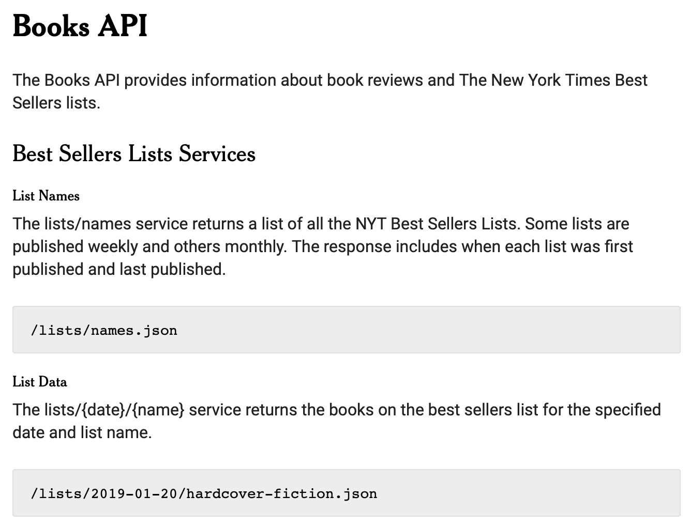
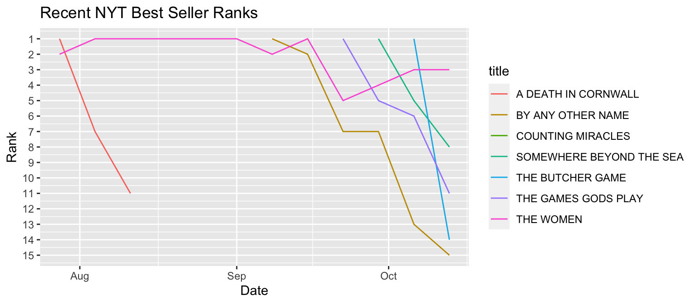

MATH167R: Programming for data analysis
Overview of today
- Programming for data science
- Functional R programming with
apply,lapply,mapply - Working with APIs
- Looping through many files
Programming for data science
In the first half of the semester, we covered skills for exploratory data analysis: visualization and descriptive statistics.
Today, we’ll combine those skills with programming concepts.
Motivating example
Each week, the New York Times publishes a list of the bestselling books in the US. Suppose we want to know:
How long has the current #1 book been #1?
How many different books have been on the bestseller list this month?
Alternatively, suppose that we wish to create a visualization/analysis that we can easily update each week when the data is released.
Motivating example
Ideally, we can write functions that will allow us to produce results automatically each week for new data:
Functional programming
Today we’ll discuss some tools in R for running these kinds of automated analyses. In particular, we’ll focus on using R for functional programming.
Functional programming is a paradigm that focuses on writing and composing functions to perform tasks. Functional programming is an example of a declarative programming style which focuses on specifying what a program should accomplish, rather than how. On the other hand, imperative programming focuses on describing how a program operates.
Functional programming
The benefits of functional programming include:
- Tasks are broken up into modular functions that can be analyzed in isolation
- Tasks may be easier to optimise or parallelize
- Unexpected side effects are avoided
Some downsides include:
- Functional programming may be less efficient than imperative programming
- Less transparency about how tasks are executed
Functional programming
Many functional languages require functions to be pure, meaning that:
- The output of a function depends only on the inputs, so if you call it with the same inputs, you get the same outputs.
- Functions have no side effects like changing the values of variables in the global environment.
R doesn’t require functions to be pure, but writing pure functions can help make your code understandable, at least in terms of clarifying what each function does.
Imperative vs. declarative
Imperative programming: for loop
Declarative programming:
Example: a complicated for loop
# Not the most transparent code
library(palmerpenguins)
data(penguins)
penguins$centered_mass <- NA
for (i in unique(penguins$species)) {
current_data <- penguins[penguins$species == i,]
species_mean_mass <- mean(current_data$body_mass_g, na.rm = T)
penguins$centered_mass[penguins$species == i] <-
current_data$body_mass_g - species_mean_mass
}Example: a functional programming approach
Functionals
Functionals are functions that takes a function (and potentially other parameters) as input and returns a vector as output. For example, here is a simple functional. What do you think the following code does?
[1] 0.5017424Functionals are often used to replace for loops.
The main drawback of for loops is that they are not expressive, meaning that they do not clearly commmunicate a high level goal. Functionals can more clearly communicate their purpose.
lapply(): Apply a function to every element of a list
The base R lapply() function takes two arguments, X (an atomic vector or list), and a function FUN that can be applied to element of X. lapply() returns a list.
Remember, we can think of every data frame as a list of columns.
lapply(): Apply a function to every element of a list
Note that lapply() always returns a list. We can use the unlist() function to turn this into a vector (but be careful).
lapply(): Apply a function to every element of a list
lapply() is especially helpful when we have datasets of different sizes:
[[1]]
[1] 0.2293113 0.5399255 0.5932944 0.6215607 0.9280625 0.9571244 0.8728272
[8] 0.6771128 0.8483717
[[2]]
[1] 0.2691854 0.5937935 0.4053343
[[3]]
[1] 0.004148464 0.328865457 0.674158513 0.510393251 0.254101223 0.467327123
[7] 0.155838512 0.231097082 0.681671808 0.119579840
[[4]]
[1] 0.005106218 0.587825394 0.012516218 0.235581732 0.899384370
[[5]]
[1] 0.7256344 0.8250066 0.7078585 0.5295352 0.8460337 0.2066284 0.1845679
[8] 0.1047033 0.7237695 0.5126595
[[6]]
[1] 0.05976194 0.84346305 0.20207893 0.16660653 0.23462366 0.05547836 0.90573437
[8] 0.48833984
[[7]]
[1] 0.6397824 0.7836940 0.9035512 0.9097204 0.9790639 0.3944549 0.8454681
[[8]]
[1] 0.4267880 0.7428932 0.6150736 0.6449547 0.6208344 0.9928129
[[9]]
[1] 0.54512189 0.60729425 0.73907435 0.02263897 0.73280592 0.77180925 0.74853588
[8] 0.69855918
[[10]]
[1] 0.8972741 0.8931200 0.9547641 0.9219677 0.9776139 0.1898124 0.3117154
[[11]]
[1] 0.05850015 0.11980556 0.59909398 0.44865544 0.04369283 0.98036025 0.23445057
[8] 0.97214024 0.06559897
[[12]]
[1] 0.64690776 0.46323619 0.50695478 0.22697315 0.07747114 0.79373667 0.14427920
[8] 0.91527255
[[13]]
[1] 0.0009608467
[[14]]
[1] 0.84183833 0.57666970 0.34430762 0.74943040 0.47643223 0.35278044 0.08775095
[8] 0.50932506
[[15]]
[1] 0.3084242 0.9291307 0.2627161
[[16]]
[1] 0.1597331 0.3957483
[[17]]
[1] 0.3792617
[[18]]
[1] 0.06010294 0.69487266 0.38137970 0.52084421
[[19]]
[1] 0.596021362 0.459909092 0.478226891 0.085583230 0.627009246 0.595864505
[7] 0.146818857 0.487277189 0.008605061 0.101293639
[[20]]
[1] 0.31646089 0.19675759 0.08896297 0.75376545 0.93936743 0.85575748lapply(): Apply a function to every element of a list
We can use lapply() to summarize all of our datasets:
vapply()
There are many other variants of lapply(), including mapply(), sapply(), and vapply(). The only one we will cover today is vapply(), which returns a vector or matrix instead of a list. When we use vapply(), we specify an additional parameter, FUN.VALUE which specifies a template for the return value from FUN.
map(): Apply a function to every element of a vector
The tidyverse map() function takes two arguments, .x (an atomic vector or list), and a function .f that can be applied to element of .x. map() returns a list.
Remember, we can think of every data frame as a list of columns.
map2(): Apply a function to every element of a vector
The tidyverse map() function takes three arguments, .x and .y (a pair of vectors or list), and a function .f that can be applied to element of .x and .f. map() returns a list.
Remember, we can think of every data frame as a list of columns.
Back to our motivating example
First, let’s get the data for each week over the last three months. To do so, we need to access the New York Times API (application programming interface)
APIs allow programs to interact–one of the most common usages is for automatically downloading data using code.
APIs for getting data
To use the New York Times API, we need to:
- Make an account and obtain an API key (an ID that will tell the New York Times who is downloading their data)
- Review the documentation to identify the relevant endpoints.
- Review any rules about usage/limits.
API endpoints
APIs provide endpoints, which are addresses from which we can obtain the relevant data.
API rate limits
In order to prevent users from abusing these services, many APIs have limits on how quickly a user can download data.

Downloading the current list
| title | author | publisher | rank | rank_last_week | weeks_on_list |
|---|---|---|---|---|---|
| COUNTING MIRACLES | Nicholas Sparks | Random House | 1 | 0 | 1 |
| INTERMEZZO | Sally Rooney | Farrar, Straus and Giroux | 2 | 0 | 1 |
| THE WOMEN | Kristin Hannah | St. Martin's | 3 | 3 | 34 |
| HERE ONE MOMENT | Liane Moriarty | Crown | 4 | 4 | 3 |
| PLAYGROUND | Richard Powers | Norton | 5 | 0 | 1 |
| IRON FLAME | Rebecca Yarros | Red Tower | 6 | 9 | 47 |
| THE LIFE IMPOSSIBLE | Matt Haig | Viking | 7 | 8 | 4 |
| SOMEWHERE BEYOND THE SEA | TJ Klune | Tor | 8 | 5 | 3 |
| TELL ME EVERYTHING | Elizabeth Strout | Random House | 9 | 10 | 3 |
| THE NIGHT WE LOST HIM | Laura Dave | S&S/Marysue Rucci | 10 | 7 | 2 |
| THE GAMES GODS PLAY | Abigail Owen | Red Tower | 11 | 6 | 4 |
| THE GOD OF THE WOODS | Liz Moore | Riverhead | 12 | 12 | 13 |
| WE SOLVE MURDERS | Richard Osman | Pamela Dorman | 13 | 2 | 2 |
| THE BUTCHER GAME | Alaina Urquhart | Zando | 14 | 1 | 2 |
| BY ANY OTHER NAME | Jodi Picoult | Ballantine | 15 | 13 | 6 |
Downloading the past three months’ data
dates <- seq(as.Date("2024-10-13"), by = -7, length.out = 12)
bestseller_lists <- lapply(
dates,
function(x) {
# slow down execution by waiting 12 seconds
Sys.sleep(15)
jsonlite::fromJSON(
paste0(
"https://api.nytimes.com/svc/books/v3/lists/",
x,
"/hardcover-fiction.json?api-key=",
api_key
)
)$results$books
}
)
names(bestseller_lists) <- datesLooping through many data files
What if we want to get the #1 book for the last 12 weeks?
2024-10-13 2024-10-06
"COUNTING MIRACLES" "THE BUTCHER GAME"
2024-09-29 2024-09-22
"SOMEWHERE BEYOND THE SEA" "THE GAMES GODS PLAY"
2024-09-15 2024-09-08
"THE WOMEN" "BY ANY OTHER NAME"
2024-09-01 2024-08-25
"THE WOMEN" "THE WOMEN"
2024-08-18 2024-08-11
"THE WOMEN" "THE WOMEN"
2024-08-04 2024-07-28
"THE WOMEN" "A DEATH IN CORNWALL" Looping through many data files
Suppose we wish to see the performance of the books that have been number one at some point in the last three months
Looping through many data files
We can use the bind_rows() to create a data frame combining all the entries in this list. The .id argument creates a column from the list’s names. We can convert these names into a Date variable.
| date | title | author | rank | rank_last_week | weeks_on_list | publisher |
|---|---|---|---|---|---|---|
| 2024-10-13 | COUNTING MIRACLES | Nicholas Sparks | 1 | 0 | 1 | Random House |
| 2024-10-13 | THE WOMEN | Kristin Hannah | 3 | 3 | 34 | St. Martin's |
| 2024-10-13 | SOMEWHERE BEYOND THE SEA | TJ Klune | 8 | 5 | 3 | Tor |
| 2024-10-13 | THE GAMES GODS PLAY | Abigail Owen | 11 | 6 | 4 | Red Tower |
| 2024-10-13 | THE BUTCHER GAME | Alaina Urquhart | 14 | 1 | 2 | Zando |
| 2024-10-13 | BY ANY OTHER NAME | Jodi Picoult | 15 | 13 | 6 | Ballantine |
| 2024-10-06 | THE BUTCHER GAME | Alaina Urquhart | 1 | 0 | 1 | Zando |
| 2024-10-06 | THE WOMEN | Kristin Hannah | 3 | 4 | 33 | St. Martin's |
| 2024-10-06 | SOMEWHERE BEYOND THE SEA | TJ Klune | 5 | 1 | 2 | Tor |
| 2024-10-06 | THE GAMES GODS PLAY | Abigail Owen | 6 | 5 | 3 | Red Tower |
| 2024-10-06 | BY ANY OTHER NAME | Jodi Picoult | 13 | 7 | 5 | Ballantine |
| 2024-09-29 | SOMEWHERE BEYOND THE SEA | TJ Klune | 1 | 0 | 1 | Tor |
| 2024-09-29 | THE WOMEN | Kristin Hannah | 4 | 5 | 32 | St. Martin's |
| 2024-09-29 | THE GAMES GODS PLAY | Abigail Owen | 5 | 1 | 2 | Red Tower |
| 2024-09-29 | BY ANY OTHER NAME | Jodi Picoult | 7 | 7 | 4 | Ballantine |
| 2024-09-22 | THE GAMES GODS PLAY | Abigail Owen | 1 | 0 | 1 | Red Tower |
| 2024-09-22 | THE WOMEN | Kristin Hannah | 5 | 1 | 31 | St. Martin's |
| 2024-09-22 | BY ANY OTHER NAME | Jodi Picoult | 7 | 2 | 3 | Ballantine |
| 2024-09-15 | THE WOMEN | Kristin Hannah | 1 | 2 | 30 | St. Martin's |
| 2024-09-15 | BY ANY OTHER NAME | Jodi Picoult | 2 | 1 | 2 | Ballantine |
| 2024-09-08 | BY ANY OTHER NAME | Jodi Picoult | 1 | 0 | 1 | Ballantine |
| 2024-09-08 | THE WOMEN | Kristin Hannah | 2 | 1 | 29 | St. Martin's |
| 2024-09-01 | THE WOMEN | Kristin Hannah | 1 | 1 | 28 | St. Martin's |
| 2024-08-25 | THE WOMEN | Kristin Hannah | 1 | 1 | 27 | St. Martin's |
| 2024-08-18 | THE WOMEN | Kristin Hannah | 1 | 1 | 26 | St. Martin's |
| 2024-08-11 | THE WOMEN | Kristin Hannah | 1 | 1 | 25 | St. Martin's |
| 2024-08-11 | A DEATH IN CORNWALL | Daniel Silva | 11 | 7 | 3 | Harper |
| 2024-08-04 | THE WOMEN | Kristin Hannah | 1 | 2 | 24 | St. Martin's |
| 2024-08-04 | A DEATH IN CORNWALL | Daniel Silva | 7 | 1 | 2 | Harper |
| 2024-07-28 | A DEATH IN CORNWALL | Daniel Silva | 1 | 0 | 1 | Harper |
| 2024-07-28 | THE WOMEN | Kristin Hannah | 2 | 1 | 23 | St. Martin's |
Looping through many data files
Looping through many data files
We can also pull the top 5 books from each list:
$`2024-10-13`
rank rank_last_week weeks_on_list asterisk dagger primary_isbn10
1 1 0 1 0 0 0593449592
2 2 0 1 0 0 0374602638
3 3 3 34 0 0 1250178630
4 4 4 3 0 0 0593798600
5 5 0 1 0 0 1324086033
primary_isbn13 publisher
1 9780593449592 Random House
2 9780374602635 Farrar, Straus and Giroux
3 9781250178633 St. Martin's
4 9780593798607 Crown
5 9781324086031 Norton
description
1 A man in search of the father he never knew encounters a single mom and rumors circulate of the nearby appearance of a white deer.
2 After the passing of their father, seemingly different brothers engage in relationships and seek ways to cope.
3 In 1965, a nursing student follows her brother to serve during the Vietnam War and returns to a divided America.
4 Passengers on a short and seemingly unremarkable flight learn how and when they are going to die.
5 Residents of an island in French Polynesia must vote on whether to send floating cities out onto the open sea.
price title author contributor contributor_note
1 0.00 COUNTING MIRACLES Nicholas Sparks by Nicholas Sparks
2 0.00 INTERMEZZO Sally Rooney by Sally Rooney
3 0.00 THE WOMEN Kristin Hannah by Kristin Hannah
4 0.00 HERE ONE MOMENT Liane Moriarty by Liane Moriarty
5 0.00 PLAYGROUND Richard Powers by Richard Powers
book_image
1 https://storage.googleapis.com/du-prd/books/images/9780593449592.jpg
2 https://storage.googleapis.com/du-prd/books/images/9780374602635.jpg
3 https://storage.googleapis.com/du-prd/books/images/9781250178633.jpg
4 https://storage.googleapis.com/du-prd/books/images/9780593798607.jpg
5 https://storage.googleapis.com/du-prd/books/images/9781324086031.jpg
book_image_width book_image_height
1 330 500
2 326 500
3 333 500
4 329 500
5 329 500
amazon_product_url age_group
1 https://www.amazon.com/dp/0593449592?tag=thenewyorktim-20
2 https://www.amazon.com/dp/0374602638?tag=thenewyorktim-20
3 https://www.amazon.com/dp/1250178630?tag=thenewyorktim-20
4 https://www.amazon.com/dp/0593798600?tag=thenewyorktim-20
5 https://www.amazon.com/dp/1324086033?tag=thenewyorktim-20
book_review_link first_chapter_link sunday_review_link article_chapter_link
1
2
3
4
5
isbns
1 0593449592, 0593449606, 9780593449592, 9780593449608
2 0374602638, 0374602646, 9780374602635, 9780374602642
3 1250178630, 1250178657, 9781250178633, 9781250178657
4 0593798600, 0593798619, 0593948262, 9780593798607, 9780593798614, 9780593948262
5 1324086033, 1324086041, 9781324086031, 9781324086048
buy_links
1 Amazon, Apple Books, Barnes and Noble, Books-A-Million, Bookshop.org, https://www.amazon.com/dp/0593449592?tag=thenewyorktim-20, https://goto.applebooks.apple/9780593449592?at=10lIEQ, https://www.anrdoezrs.net/click-7990613-11819508?url=https%3A%2F%2Fwww.barnesandnoble.com%2Fw%2F%3Fean%3D9780593449592, https://www.anrdoezrs.net/click-7990613-35140?url=https%3A%2F%2Fwww.booksamillion.com%2Fp%2FCOUNTING%2BMIRACLES%2FNicholas%2BSparks%2F9780593449592, https://bookshop.org/a/3546/9780593449592
2 Amazon, Apple Books, Barnes and Noble, Books-A-Million, Bookshop.org, https://www.amazon.com/dp/0374602638?tag=thenewyorktim-20, https://goto.applebooks.apple/9780374602635?at=10lIEQ, https://www.anrdoezrs.net/click-7990613-11819508?url=https%3A%2F%2Fwww.barnesandnoble.com%2Fw%2F%3Fean%3D9780374602635, https://www.anrdoezrs.net/click-7990613-35140?url=https%3A%2F%2Fwww.booksamillion.com%2Fp%2FINTERMEZZO%2FSally%2BRooney%2F9780374602635, https://bookshop.org/a/3546/9780374602635
3 Amazon, Apple Books, Barnes and Noble, Books-A-Million, Bookshop.org, https://www.amazon.com/dp/1250178630?tag=thenewyorktim-20, https://goto.applebooks.apple/9781250178633?at=10lIEQ, https://www.anrdoezrs.net/click-7990613-11819508?url=https%3A%2F%2Fwww.barnesandnoble.com%2Fw%2F%3Fean%3D9781250178633, https://www.anrdoezrs.net/click-7990613-35140?url=https%3A%2F%2Fwww.booksamillion.com%2Fp%2FTHE%2BWOMEN%2FKristin%2BHannah%2F9781250178633, https://bookshop.org/a/3546/9781250178633
4 Amazon, Apple Books, Barnes and Noble, Books-A-Million, Bookshop.org, https://www.amazon.com/dp/0593798600?tag=thenewyorktim-20, https://goto.applebooks.apple/9780593798607?at=10lIEQ, https://www.anrdoezrs.net/click-7990613-11819508?url=https%3A%2F%2Fwww.barnesandnoble.com%2Fw%2F%3Fean%3D9780593798607, https://www.anrdoezrs.net/click-7990613-35140?url=https%3A%2F%2Fwww.booksamillion.com%2Fp%2FHERE%2BONE%2BMOMENT%2FLiane%2BMoriarty%2F9780593798607, https://bookshop.org/a/3546/9780593798607
5 Amazon, Apple Books, Barnes and Noble, Books-A-Million, Bookshop.org, https://www.amazon.com/dp/1324086033?tag=thenewyorktim-20, https://goto.applebooks.apple/9781324086031?at=10lIEQ, https://www.anrdoezrs.net/click-7990613-11819508?url=https%3A%2F%2Fwww.barnesandnoble.com%2Fw%2F%3Fean%3D9781324086031, https://www.anrdoezrs.net/click-7990613-35140?url=https%3A%2F%2Fwww.booksamillion.com%2Fp%2FPLAYGROUND%2FRichard%2BPowers%2F9781324086031, https://bookshop.org/a/3546/9781324086031
book_uri
1 nyt://book/974caeee-6bf0-524c-809c-29bfdd99d65f
2 nyt://book/a3bcdd05-312a-566b-90ec-df50e894bce6
3 nyt://book/9ce735af-71cf-5ff3-a367-43ee07e3fdd7
4 nyt://book/7e99e658-bd91-5488-a007-2bd74a8ef613
5 nyt://book/793958d9-63c8-56d6-9612-29dbbc127699
$`2024-10-06`
rank rank_last_week weeks_on_list asterisk dagger primary_isbn10
1 1 0 1 0 0 1638931240
2 2 0 1 0 0 059365322X
3 3 4 33 0 0 1250178630
4 4 2 2 0 0 0593798600
5 5 1 2 0 0 125088120X
primary_isbn13 publisher
1 9781638931249 Zando
2 9780593653227 Pamela Dorman
3 9781250178633 St. Martin's
4 9780593798607 Crown
5 9781250881205 Tor
description
1 The second book in the Dr. Wren Muller series. A serial killer wants to settle a score with a forensic pathologist.
2 When a dead body and a bag of money turn up on a remote island, Amy Wheeler reaches out to her retired father-in-law to help investigate.
3 In 1965, a nursing student follows her brother to serve during the Vietnam War and returns to a divided America.
4 Passengers on a short and seemingly unremarkable flight learn how and when they are going to die.
5 The second book in the Cerulean Chronicles series. The headmaster of a strange orphanage seeks to protect the magical children who reside there.
price title author contributor
1 0.00 THE BUTCHER GAME Alaina Urquhart by Alaina Urquhart
2 0.00 WE SOLVE MURDERS Richard Osman by Richard Osman
3 0.00 THE WOMEN Kristin Hannah by Kristin Hannah
4 0.00 HERE ONE MOMENT Liane Moriarty by Liane Moriarty
5 0.00 SOMEWHERE BEYOND THE SEA TJ Klune by TJ Klune
contributor_note
1
2
3
4
5
book_image
1 https://storage.googleapis.com/du-prd/books/images/9781638931249.jpg
2 https://storage.googleapis.com/du-prd/books/images/9780593653227.jpg
3 https://storage.googleapis.com/du-prd/books/images/9781250178633.jpg
4 https://storage.googleapis.com/du-prd/books/images/9780593798607.jpg
5 https://storage.googleapis.com/du-prd/books/images/9781250881205.jpg
book_image_width book_image_height
1 331 500
2 331 500
3 333 500
4 329 500
5 295 500
amazon_product_url age_group
1 https://www.amazon.com/dp/1638931240?tag=thenewyorktim-20
2 https://www.amazon.com/dp/059365322X?tag=thenewyorktim-20
3 https://www.amazon.com/dp/1250178630?tag=thenewyorktim-20
4 https://www.amazon.com/dp/0593798600?tag=thenewyorktim-20
5 https://www.amazon.com/dp/125088120X?tag=thenewyorktim-20
book_review_link first_chapter_link sunday_review_link article_chapter_link
1
2
3
4
5
isbns
1 1638931240, 9781638931249
2 059365322X, 0593653238, 0593912128, 9780593653227, 9780593653234, 9780593912126
3 1250178630, 1250178657, 9781250178633, 9781250178657
4 0593798600, 0593798619, 0593948262, 9780593798607, 9780593798614, 9780593948262
5 125088120X, 1250881218, 9781250881205, 9781250881212
buy_links
1 Amazon, Apple Books, Barnes and Noble, Books-A-Million, Bookshop.org, https://www.amazon.com/dp/1638931240?tag=thenewyorktim-20, https://goto.applebooks.apple/9781638931249?at=10lIEQ, https://www.anrdoezrs.net/click-7990613-11819508?url=https%3A%2F%2Fwww.barnesandnoble.com%2Fw%2F%3Fean%3D9781638931249, https://www.anrdoezrs.net/click-7990613-35140?url=https%3A%2F%2Fwww.booksamillion.com%2Fp%2FTHE%2BBUTCHER%2BGAME%2FAlaina%2BUrquhart%2F9781638931249, https://bookshop.org/a/3546/9781638931249
2 Amazon, Apple Books, Barnes and Noble, Books-A-Million, Bookshop.org, https://www.amazon.com/dp/059365322X?tag=thenewyorktim-20, https://goto.applebooks.apple/9780593653227?at=10lIEQ, https://www.anrdoezrs.net/click-7990613-11819508?url=https%3A%2F%2Fwww.barnesandnoble.com%2Fw%2F%3Fean%3D9780593653227, https://www.anrdoezrs.net/click-7990613-35140?url=https%3A%2F%2Fwww.booksamillion.com%2Fp%2FWE%2BSOLVE%2BMURDERS%2FRichard%2BOsman%2F9780593653227, https://bookshop.org/a/3546/9780593653227
3 Amazon, Apple Books, Barnes and Noble, Books-A-Million, Bookshop.org, https://www.amazon.com/dp/1250178630?tag=thenewyorktim-20, https://goto.applebooks.apple/9781250178633?at=10lIEQ, https://www.anrdoezrs.net/click-7990613-11819508?url=https%3A%2F%2Fwww.barnesandnoble.com%2Fw%2F%3Fean%3D9781250178633, https://www.anrdoezrs.net/click-7990613-35140?url=https%3A%2F%2Fwww.booksamillion.com%2Fp%2FTHE%2BWOMEN%2FKristin%2BHannah%2F9781250178633, https://bookshop.org/a/3546/9781250178633
4 Amazon, Apple Books, Barnes and Noble, Books-A-Million, Bookshop.org, https://www.amazon.com/dp/0593798600?tag=thenewyorktim-20, https://goto.applebooks.apple/9780593798607?at=10lIEQ, https://www.anrdoezrs.net/click-7990613-11819508?url=https%3A%2F%2Fwww.barnesandnoble.com%2Fw%2F%3Fean%3D9780593798607, https://www.anrdoezrs.net/click-7990613-35140?url=https%3A%2F%2Fwww.booksamillion.com%2Fp%2FHERE%2BONE%2BMOMENT%2FLiane%2BMoriarty%2F9780593798607, https://bookshop.org/a/3546/9780593798607
5 Amazon, Apple Books, Barnes and Noble, Books-A-Million, Bookshop.org, https://www.amazon.com/dp/125088120X?tag=thenewyorktim-20, https://goto.applebooks.apple/9781250881205?at=10lIEQ, https://www.anrdoezrs.net/click-7990613-11819508?url=https%3A%2F%2Fwww.barnesandnoble.com%2Fw%2F%3Fean%3D9781250881205, https://www.anrdoezrs.net/click-7990613-35140?url=https%3A%2F%2Fwww.booksamillion.com%2Fp%2FSOMEWHERE%2BBEYOND%2BTHE%2BSEA%2FTJ%2BKlune%2F9781250881205, https://bookshop.org/a/3546/9781250881205
book_uri
1 nyt://book/30d32d24-e341-5f6a-a48f-bcf4f45fdb9d
2 nyt://book/bb3ebdd1-46d3-5882-a4cd-4b898ab35293
3 nyt://book/9ce735af-71cf-5ff3-a367-43ee07e3fdd7
4 nyt://book/7e99e658-bd91-5488-a007-2bd74a8ef613
5 nyt://book/4419017e-5c60-5509-9d19-3023bc60cb5d
$`2024-09-29`
rank rank_last_week weeks_on_list asterisk dagger primary_isbn10
1 1 0 1 0 0 125088120X
2 2 0 1 0 0 0593798600
3 3 0 1 0 0 0593446097
4 4 5 32 0 0 1250178630
5 5 1 2 0 0 1649376561
primary_isbn13 publisher
1 9781250881205 Tor
2 9780593798607 Crown
3 9780593446096 Random House
4 9781250178633 St. Martin's
5 9781649376565 Red Tower
description
1 The second book in the Cerulean Chronicles series. The headmaster of a strange orphanage seeks to protect the magical children who reside there.
2 Passengers on a short and seemingly unremarkable flight learn how and when they are going to die.
3 As a murder casts a pall on a town in Maine, Lucy Barton, Olive Kitteridge and Bob Burgess share stories and seek meaning.
4 In 1965, a nursing student follows her brother to serve during the Vietnam War and returns to a divided America.
5 Gods enlist mortals to fight in their stead to determine who will sit on the throne in Olympus.
price title author contributor
1 0.00 SOMEWHERE BEYOND THE SEA TJ Klune by TJ Klune
2 0.00 HERE ONE MOMENT Liane Moriarty by Liane Moriarty
3 0.00 TELL ME EVERYTHING Elizabeth Strout by Elizabeth Strout
4 0.00 THE WOMEN Kristin Hannah by Kristin Hannah
5 0.00 THE GAMES GODS PLAY Abigail Owen by Abigail Owen
contributor_note
1
2
3
4
5
book_image
1 https://storage.googleapis.com/du-prd/books/images/9781250881205.jpg
2 https://storage.googleapis.com/du-prd/books/images/9780593798607.jpg
3 https://storage.googleapis.com/du-prd/books/images/9780593446096.jpg
4 https://storage.googleapis.com/du-prd/books/images/9781250178633.jpg
5 https://storage.googleapis.com/du-prd/books/images/9781649376565.jpg
book_image_width book_image_height
1 295 500
2 329 500
3 331 500
4 333 500
5 309 500
amazon_product_url age_group
1 https://www.amazon.com/dp/125088120X?tag=thenewyorktim-20
2 https://www.amazon.com/dp/0593798600?tag=thenewyorktim-20
3 https://www.amazon.com/dp/0593446097?tag=thenewyorktim-20
4 https://www.amazon.com/dp/1250178630?tag=thenewyorktim-20
5 https://www.amazon.com/dp/1649376561?tag=thenewyorktim-20
book_review_link first_chapter_link sunday_review_link article_chapter_link
1
2
3
4
5
isbns
1 125088120X, 1250881218, 9781250881205, 9781250881212
2 0593798600, 0593798619, 0593948262, 9780593798607, 9780593798614, 9780593948262
3 0593446097, 0593446100, 9780593446096, 9780593446102
4 1250178630, 1250178657, 9781250178633, 9781250178657
5 1649376561, 1649376413, 1649376588, 9781649376565, 9781649376411, 9781649376589
buy_links
1 Amazon, Apple Books, Barnes and Noble, Books-A-Million, Bookshop.org, https://www.amazon.com/dp/125088120X?tag=thenewyorktim-20, https://goto.applebooks.apple/9781250881205?at=10lIEQ, https://www.anrdoezrs.net/click-7990613-11819508?url=https%3A%2F%2Fwww.barnesandnoble.com%2Fw%2F%3Fean%3D9781250881205, https://www.anrdoezrs.net/click-7990613-35140?url=https%3A%2F%2Fwww.booksamillion.com%2Fp%2FSOMEWHERE%2BBEYOND%2BTHE%2BSEA%2FTJ%2BKlune%2F9781250881205, https://bookshop.org/a/3546/9781250881205
2 Amazon, Apple Books, Barnes and Noble, Books-A-Million, Bookshop.org, https://www.amazon.com/dp/0593798600?tag=thenewyorktim-20, https://goto.applebooks.apple/9780593798607?at=10lIEQ, https://www.anrdoezrs.net/click-7990613-11819508?url=https%3A%2F%2Fwww.barnesandnoble.com%2Fw%2F%3Fean%3D9780593798607, https://www.anrdoezrs.net/click-7990613-35140?url=https%3A%2F%2Fwww.booksamillion.com%2Fp%2FHERE%2BONE%2BMOMENT%2FLiane%2BMoriarty%2F9780593798607, https://bookshop.org/a/3546/9780593798607
3 Amazon, Apple Books, Barnes and Noble, Books-A-Million, Bookshop.org, https://www.amazon.com/dp/0593446097?tag=thenewyorktim-20, https://goto.applebooks.apple/9780593446096?at=10lIEQ, https://www.anrdoezrs.net/click-7990613-11819508?url=https%3A%2F%2Fwww.barnesandnoble.com%2Fw%2F%3Fean%3D9780593446096, https://www.anrdoezrs.net/click-7990613-35140?url=https%3A%2F%2Fwww.booksamillion.com%2Fp%2FTELL%2BME%2BEVERYTHING%2FElizabeth%2BStrout%2F9780593446096, https://bookshop.org/a/3546/9780593446096
4 Amazon, Apple Books, Barnes and Noble, Books-A-Million, Bookshop.org, https://www.amazon.com/dp/1250178630?tag=thenewyorktim-20, https://goto.applebooks.apple/9781250178633?at=10lIEQ, https://www.anrdoezrs.net/click-7990613-11819508?url=https%3A%2F%2Fwww.barnesandnoble.com%2Fw%2F%3Fean%3D9781250178633, https://www.anrdoezrs.net/click-7990613-35140?url=https%3A%2F%2Fwww.booksamillion.com%2Fp%2FTHE%2BWOMEN%2FKristin%2BHannah%2F9781250178633, https://bookshop.org/a/3546/9781250178633
5 Amazon, Apple Books, Barnes and Noble, Books-A-Million, Bookshop.org, https://www.amazon.com/dp/1649376561?tag=thenewyorktim-20, https://goto.applebooks.apple/9781649376565?at=10lIEQ, https://www.anrdoezrs.net/click-7990613-11819508?url=https%3A%2F%2Fwww.barnesandnoble.com%2Fw%2F%3Fean%3D9781649376565, https://www.anrdoezrs.net/click-7990613-35140?url=https%3A%2F%2Fwww.booksamillion.com%2Fp%2FTHE%2BGAMES%2BGODS%2BPLAY%2FAbigail%2BOwen%2F9781649376565, https://bookshop.org/a/3546/9781649376565
book_uri
1 nyt://book/4419017e-5c60-5509-9d19-3023bc60cb5d
2 nyt://book/7e99e658-bd91-5488-a007-2bd74a8ef613
3 nyt://book/3f5b9449-8053-58fe-b24d-67c77f14d384
4 nyt://book/9ce735af-71cf-5ff3-a367-43ee07e3fdd7
5 nyt://book/635891fb-0ec5-5966-b9f1-4b040fec2bfe
$`2024-09-22`
rank rank_last_week weeks_on_list asterisk dagger primary_isbn10
1 1 0 1 0 0 1649376561
2 2 0 1 0 0 1668045834
3 3 0 1 0 0 1250358949
4 4 0 1 0 0 1250289564
5 5 1 31 0 0 1250178630
primary_isbn13 publisher
1 9781649376565 Red Tower
2 9781668045831 Atria/Emily Bestler
3 9781250358943 Bramble
4 9781250289568 St. Martin's
5 9781250178633 St. Martin's
description
1 Gods enlist mortals to fight in their stead to determine who will sit on the throne in Olympus.
2 The 23rd book in the Mitch Rapp series. In 2011, operations take place to prevent a looming war in the Middle East.
3 The second book in the Coven of Bones series. Feelings of betrayal and revenge put things in a precarious place.
4 The 59th book of the In Death series. Bad memories come up for Eve Dallas at a crime scene.
5 In 1965, a nursing student follows her brother to serve during the Vietnam War and returns to a divided America.
price title author contributor
1 0.00 THE GAMES GODS PLAY Abigail Owen by Abigail Owen
2 0.00 VINCE FLYNN: CAPTURE OR KILL Don Bentley by Don Bentley
3 0.00 THE CURSED Harper L. Woods by Harper L. Woods
4 0.00 PASSIONS IN DEATH J.D. Robb by J.D. Robb
5 0.00 THE WOMEN Kristin Hannah by Kristin Hannah
contributor_note
1
2
3
4
5
book_image
1 https://storage.googleapis.com/du-prd/books/images/9781649376565.jpg
2 https://storage.googleapis.com/du-prd/books/images/9781668045831.jpg
3 https://storage.googleapis.com/du-prd/books/images/9781250358943.jpg
4 https://storage.googleapis.com/du-prd/books/images/9781250289568.jpg
5 https://storage.googleapis.com/du-prd/books/images/9781250178633.jpg
book_image_width book_image_height
1 309 500
2 329 500
3 367 500
4 329 500
5 333 500
amazon_product_url age_group
1 https://www.amazon.com/dp/1649376561?tag=thenewyorktim-20
2 https://www.amazon.com/dp/1668045834?tag=thenewyorktim-20
3 https://www.amazon.com/dp/1250358949?tag=thenewyorktim-20
4 https://www.amazon.com/dp/1250289564?tag=thenewyorktim-20
5 https://www.amazon.com/dp/1250178630?tag=thenewyorktim-20
book_review_link first_chapter_link sunday_review_link article_chapter_link
1
2
3
4
5
isbns
1 1649376561, 1649376413, 1649376588, 9781649376565, 9781649376411, 9781649376589
2 1668045834, 1668045869, 9781668045831, 9781668045862
3 1250358949, 9781250358943
4 1250289564, 1250289572, 1250354188, 9781250289568, 9781250289575, 9781250354181
5 1250178630, 1250178657, 9781250178633, 9781250178657
buy_links
1 Amazon, Apple Books, Barnes and Noble, Books-A-Million, Bookshop.org, https://www.amazon.com/dp/1649376561?tag=thenewyorktim-20, https://goto.applebooks.apple/9781649376565?at=10lIEQ, https://www.anrdoezrs.net/click-7990613-11819508?url=https%3A%2F%2Fwww.barnesandnoble.com%2Fw%2F%3Fean%3D9781649376565, https://www.anrdoezrs.net/click-7990613-35140?url=https%3A%2F%2Fwww.booksamillion.com%2Fp%2FTHE%2BGAMES%2BGODS%2BPLAY%2FAbigail%2BOwen%2F9781649376565, https://bookshop.org/a/3546/9781649376565
2 Amazon, Apple Books, Barnes and Noble, Books-A-Million, Bookshop.org, https://www.amazon.com/dp/1668045834?tag=thenewyorktim-20, https://goto.applebooks.apple/9781668045831?at=10lIEQ, https://www.anrdoezrs.net/click-7990613-11819508?url=https%3A%2F%2Fwww.barnesandnoble.com%2Fw%2F%3Fean%3D9781668045831, https://www.anrdoezrs.net/click-7990613-35140?url=https%3A%2F%2Fwww.booksamillion.com%2Fp%2FVINCE%2BFLYNN%253A%2BCAPTURE%2BOR%2BKILL%2FDon%2BBentley%2F9781668045831, https://bookshop.org/a/3546/9781668045831
3 Amazon, Apple Books, Barnes and Noble, Books-A-Million, Bookshop.org, https://www.amazon.com/dp/1250358949?tag=thenewyorktim-20, https://goto.applebooks.apple/9781250358943?at=10lIEQ, https://www.anrdoezrs.net/click-7990613-11819508?url=https%3A%2F%2Fwww.barnesandnoble.com%2Fw%2F%3Fean%3D9781250358943, https://www.anrdoezrs.net/click-7990613-35140?url=https%3A%2F%2Fwww.booksamillion.com%2Fp%2FTHE%2BCURSED%2FHarper%2BL.%2BWoods%2F9781250358943, https://bookshop.org/a/3546/9781250358943
4 Amazon, Apple Books, Barnes and Noble, Books-A-Million, Bookshop.org, https://www.amazon.com/dp/1250289564?tag=thenewyorktim-20, https://goto.applebooks.apple/9781250289568?at=10lIEQ, https://www.anrdoezrs.net/click-7990613-11819508?url=https%3A%2F%2Fwww.barnesandnoble.com%2Fw%2F%3Fean%3D9781250289568, https://www.anrdoezrs.net/click-7990613-35140?url=https%3A%2F%2Fwww.booksamillion.com%2Fp%2FPASSIONS%2BIN%2BDEATH%2FJ.D.%2BRobb%2F9781250289568, https://bookshop.org/a/3546/9781250289568
5 Amazon, Apple Books, Barnes and Noble, Books-A-Million, Bookshop.org, https://www.amazon.com/dp/1250178630?tag=thenewyorktim-20, https://goto.applebooks.apple/9781250178633?at=10lIEQ, https://www.anrdoezrs.net/click-7990613-11819508?url=https%3A%2F%2Fwww.barnesandnoble.com%2Fw%2F%3Fean%3D9781250178633, https://www.anrdoezrs.net/click-7990613-35140?url=https%3A%2F%2Fwww.booksamillion.com%2Fp%2FTHE%2BWOMEN%2FKristin%2BHannah%2F9781250178633, https://bookshop.org/a/3546/9781250178633
book_uri
1 nyt://book/635891fb-0ec5-5966-b9f1-4b040fec2bfe
2 nyt://book/77e49408-e59f-564d-8594-273da7a91247
3 nyt://book/c44bd978-fdb3-5d15-a1fc-b965f9cf8fc2
4 nyt://book/4404253f-5b03-5ddc-a47d-543d50cbced9
5 nyt://book/9ce735af-71cf-5ff3-a367-43ee07e3fdd7
$`2024-09-15`
rank rank_last_week weeks_on_list asterisk dagger primary_isbn10
1 1 2 30 0 0 1250178630
2 2 1 2 0 0 059349721X
3 3 6 9 0 0 0593418913
4 4 4 69 0 0 1649374046
5 5 5 43 0 0 1649374178
primary_isbn13 publisher
1 9781250178633 St. Martin's
2 9780593497210 Ballantine
3 9780593418918 Riverhead
4 9781649374042 Red Tower
5 9781649374172 Red Tower
description
1 In 1965, a nursing student follows her brother to serve during the Vietnam War and returns to a divided America.
2 A young woman’s play about her ancestor Emilia Bassano, who wrote Shakespeare’s works, is submitted to a festival under a male pseudonym.
3 When a 13-year-old girl disappears from an Adirondack summer camp in 1975, secrets kept by the Van Laar family emerge.
4 Violet Sorrengail is urged by the commanding general, who also is her mother, to become a candidate for the elite dragon riders.
5 The second book in the Empyrean series. Violet Sorrengail’s next round of training might require her to betray the man she loves.
price title author contributor contributor_note
1 0.00 THE WOMEN Kristin Hannah by Kristin Hannah
2 0.00 BY ANY OTHER NAME Jodi Picoult by Jodi Picoult
3 0.00 THE GOD OF THE WOODS Liz Moore by Liz Moore
4 0.00 FOURTH WING Rebecca Yarros by Rebecca Yarros
5 0.00 IRON FLAME Rebecca Yarros by Rebecca Yarros
book_image
1 https://storage.googleapis.com/du-prd/books/images/9781250178633.jpg
2 https://storage.googleapis.com/du-prd/books/images/9780593497210.jpg
3 https://storage.googleapis.com/du-prd/books/images/9780593418918.jpg
4 https://storage.googleapis.com/du-prd/books/images/9781649374042.jpg
5 https://storage.googleapis.com/du-prd/books/images/9781649374172.jpg
book_image_width book_image_height
1 333 500
2 333 500
3 331 500
4 309 500
5 309 500
amazon_product_url age_group
1 https://www.amazon.com/dp/1250178630?tag=thenewyorktim-20
2 https://www.amazon.com/dp/059349721X?tag=thenewyorktim-20
3 https://www.amazon.com/dp/0593418913?tag=thenewyorktim-20
4 https://www.amazon.com/dp/1649374046?tag=thenewyorktim-20
5 https://www.amazon.com/dp/1649374178?tag=thenewyorktim-20
book_review_link first_chapter_link sunday_review_link article_chapter_link
1
2
3
4
5
isbns
1 1250178630, 1250178657, 9781250178633, 9781250178657
2 059349721X, 0593497228, 9780593497210, 9780593497227
3 0593418913, 059341893X, 0593867793, 9780593418918, 9780593418932, 9780593867792
4 1649374046, 1649374089, 1705085059, 1705085032, 1649376162, 1649377371, 9781649374042, 9781649374080, 9781705085059, 9781705085035, 9781649376169, 9781649377371
5 1649374178, 1705085083, 9781649374172, 9781705085080
buy_links
1 Amazon, Apple Books, Barnes and Noble, Books-A-Million, Bookshop.org, https://www.amazon.com/dp/1250178630?tag=thenewyorktim-20, https://goto.applebooks.apple/9781250178633?at=10lIEQ, https://www.anrdoezrs.net/click-7990613-11819508?url=https%3A%2F%2Fwww.barnesandnoble.com%2Fw%2F%3Fean%3D9781250178633, https://www.anrdoezrs.net/click-7990613-35140?url=https%3A%2F%2Fwww.booksamillion.com%2Fp%2FTHE%2BWOMEN%2FKristin%2BHannah%2F9781250178633, https://bookshop.org/a/3546/9781250178633
2 Amazon, Apple Books, Barnes and Noble, Books-A-Million, Bookshop.org, https://www.amazon.com/dp/059349721X?tag=thenewyorktim-20, https://goto.applebooks.apple/9780593497210?at=10lIEQ, https://www.anrdoezrs.net/click-7990613-11819508?url=https%3A%2F%2Fwww.barnesandnoble.com%2Fw%2F%3Fean%3D9780593497210, https://www.anrdoezrs.net/click-7990613-35140?url=https%3A%2F%2Fwww.booksamillion.com%2Fp%2FBY%2BANY%2BOTHER%2BNAME%2FJodi%2BPicoult%2F9780593497210, https://bookshop.org/a/3546/9780593497210
3 Amazon, Apple Books, Barnes and Noble, Books-A-Million, Bookshop.org, https://www.amazon.com/dp/0593418913?tag=thenewyorktim-20, https://goto.applebooks.apple/9780593418918?at=10lIEQ, https://www.anrdoezrs.net/click-7990613-11819508?url=https%3A%2F%2Fwww.barnesandnoble.com%2Fw%2F%3Fean%3D9780593418918, https://www.anrdoezrs.net/click-7990613-35140?url=https%3A%2F%2Fwww.booksamillion.com%2Fp%2FTHE%2BGOD%2BOF%2BTHE%2BWOODS%2FLiz%2BMoore%2F9780593418918, https://bookshop.org/a/3546/9780593418918
4 Amazon, Apple Books, Barnes and Noble, Books-A-Million, Bookshop.org, https://www.amazon.com/dp/1649374046?tag=thenewyorktim-20, https://goto.applebooks.apple/9781649374042?at=10lIEQ, https://www.anrdoezrs.net/click-7990613-11819508?url=https%3A%2F%2Fwww.barnesandnoble.com%2Fw%2F%3Fean%3D9781649374042, https://www.anrdoezrs.net/click-7990613-35140?url=https%3A%2F%2Fwww.booksamillion.com%2Fp%2FFOURTH%2BWING%2FRebecca%2BYarros%2F9781649374042, https://bookshop.org/a/3546/9781649374042
5 Amazon, Apple Books, Barnes and Noble, Books-A-Million, Bookshop.org, https://www.amazon.com/dp/1649374178?tag=thenewyorktim-20, https://goto.applebooks.apple/9781649374172?at=10lIEQ, https://www.anrdoezrs.net/click-7990613-11819508?url=https%3A%2F%2Fwww.barnesandnoble.com%2Fw%2F%3Fean%3D9781649374172, https://www.anrdoezrs.net/click-7990613-35140?url=https%3A%2F%2Fwww.booksamillion.com%2Fp%2FIRON%2BFLAME%2FRebecca%2BYarros%2F9781649374172, https://bookshop.org/a/3546/9781649374172
book_uri
1 nyt://book/9ce735af-71cf-5ff3-a367-43ee07e3fdd7
2 nyt://book/8b4e805b-9680-5be5-8f36-0726824962a8
3 nyt://book/76d129f6-ab9c-591c-b25e-9a2758250c07
4 nyt://book/106c2cf0-7d20-51b1-bad4-91c3ebcd131a
5 nyt://book/d3c570c9-3c3a-5c8b-a740-85ea5e92bfc9
$`2024-09-08`
rank rank_last_week weeks_on_list asterisk dagger primary_isbn10
1 1 0 1 0 0 059349721X
2 2 1 29 0 0 1250178630
3 3 0 1 0 0 1982179244
4 4 6 68 0 0 1649374046
5 5 7 42 0 0 1649374178
primary_isbn13 publisher
1 9780593497210 Ballantine
2 9781250178633 St. Martin's
3 9781982179243 Atria
4 9781649374042 Red Tower
5 9781649374172 Red Tower
description
1 A young woman’s play about her ancestor Emilia Bassano, who wrote Shakespeare’s works, is submitted to a festival under a male pseudonym.
2 In 1965, a nursing student follows her brother to serve during the Vietnam War and returns to a divided America.
3 The 20th book in the Cork O’Connor mystery series. A local politician’s teenage daughter goes missing and the shallow grave of a young Ojibwe woman is discovered.
4 Violet Sorrengail is urged by the commanding general, who also is her mother, to become a candidate for the elite dragon riders.
5 The second book in the Empyrean series. Violet Sorrengail’s next round of training might require her to betray the man she loves.
price title author contributor
1 0.00 BY ANY OTHER NAME Jodi Picoult by Jodi Picoult
2 0.00 THE WOMEN Kristin Hannah by Kristin Hannah
3 0.00 SPIRIT CROSSING William Kent Krueger by William Kent Krueger
4 0.00 FOURTH WING Rebecca Yarros by Rebecca Yarros
5 0.00 IRON FLAME Rebecca Yarros by Rebecca Yarros
contributor_note
1
2
3
4
5
book_image
1 https://storage.googleapis.com/du-prd/books/images/9780593497210.jpg
2 https://storage.googleapis.com/du-prd/books/images/9781250178633.jpg
3 https://storage.googleapis.com/du-prd/books/images/9781982179267.jpg
4 https://storage.googleapis.com/du-prd/books/images/9781649374042.jpg
5 https://storage.googleapis.com/du-prd/books/images/9781649374172.jpg
book_image_width book_image_height
1 333 500
2 333 500
3 331 500
4 309 500
5 309 500
amazon_product_url age_group
1 https://www.amazon.com/dp/059349721X?tag=thenewyorktim-20
2 https://www.amazon.com/dp/1250178630?tag=thenewyorktim-20
3 https://www.amazon.com/dp/1982179244?tag=thenewyorktim-20
4 https://www.amazon.com/dp/1649374046?tag=thenewyorktim-20
5 https://www.amazon.com/dp/1649374178?tag=thenewyorktim-20
book_review_link first_chapter_link sunday_review_link article_chapter_link
1
2
3
4
5
isbns
1 059349721X, 0593497228, 9780593497210, 9780593497227
2 1250178630, 1250178657, 9781250178633, 9781250178657
3 1982179244, 1982179260, 9781982179243, 9781982179267
4 1649374046, 1649374089, 1705085059, 1705085032, 1649376162, 1649377371, 9781649374042, 9781649374080, 9781705085059, 9781705085035, 9781649376169, 9781649377371
5 1649374178, 1705085083, 9781649374172, 9781705085080
buy_links
1 Amazon, Apple Books, Barnes and Noble, Books-A-Million, Bookshop.org, https://www.amazon.com/dp/059349721X?tag=thenewyorktim-20, https://goto.applebooks.apple/9780593497210?at=10lIEQ, https://www.anrdoezrs.net/click-7990613-11819508?url=https%3A%2F%2Fwww.barnesandnoble.com%2Fw%2F%3Fean%3D9780593497210, https://www.anrdoezrs.net/click-7990613-35140?url=https%3A%2F%2Fwww.booksamillion.com%2Fp%2FBY%2BANY%2BOTHER%2BNAME%2FJodi%2BPicoult%2F9780593497210, https://bookshop.org/a/3546/9780593497210
2 Amazon, Apple Books, Barnes and Noble, Books-A-Million, Bookshop.org, https://www.amazon.com/dp/1250178630?tag=thenewyorktim-20, https://goto.applebooks.apple/9781250178633?at=10lIEQ, https://www.anrdoezrs.net/click-7990613-11819508?url=https%3A%2F%2Fwww.barnesandnoble.com%2Fw%2F%3Fean%3D9781250178633, https://www.anrdoezrs.net/click-7990613-35140?url=https%3A%2F%2Fwww.booksamillion.com%2Fp%2FTHE%2BWOMEN%2FKristin%2BHannah%2F9781250178633, https://bookshop.org/a/3546/9781250178633
3 Amazon, Apple Books, Barnes and Noble, Books-A-Million, Bookshop.org, https://www.amazon.com/dp/1982179244?tag=thenewyorktim-20, https://goto.applebooks.apple/9781982179243?at=10lIEQ, https://www.anrdoezrs.net/click-7990613-11819508?url=https%3A%2F%2Fwww.barnesandnoble.com%2Fw%2F%3Fean%3D9781982179243, https://www.anrdoezrs.net/click-7990613-35140?url=https%3A%2F%2Fwww.booksamillion.com%2Fp%2FSPIRIT%2BCROSSING%2FWilliam%2BKent%2BKrueger%2F9781982179243, https://bookshop.org/a/3546/9781982179243
4 Amazon, Apple Books, Barnes and Noble, Books-A-Million, Bookshop.org, https://www.amazon.com/dp/1649374046?tag=thenewyorktim-20, https://goto.applebooks.apple/9781649374042?at=10lIEQ, https://www.anrdoezrs.net/click-7990613-11819508?url=https%3A%2F%2Fwww.barnesandnoble.com%2Fw%2F%3Fean%3D9781649374042, https://www.anrdoezrs.net/click-7990613-35140?url=https%3A%2F%2Fwww.booksamillion.com%2Fp%2FFOURTH%2BWING%2FRebecca%2BYarros%2F9781649374042, https://bookshop.org/a/3546/9781649374042
5 Amazon, Apple Books, Barnes and Noble, Books-A-Million, Bookshop.org, https://www.amazon.com/dp/1649374178?tag=thenewyorktim-20, https://goto.applebooks.apple/9781649374172?at=10lIEQ, https://www.anrdoezrs.net/click-7990613-11819508?url=https%3A%2F%2Fwww.barnesandnoble.com%2Fw%2F%3Fean%3D9781649374172, https://www.anrdoezrs.net/click-7990613-35140?url=https%3A%2F%2Fwww.booksamillion.com%2Fp%2FIRON%2BFLAME%2FRebecca%2BYarros%2F9781649374172, https://bookshop.org/a/3546/9781649374172
book_uri
1 nyt://book/8b4e805b-9680-5be5-8f36-0726824962a8
2 nyt://book/9ce735af-71cf-5ff3-a367-43ee07e3fdd7
3 nyt://book/518526dc-866c-5ae1-b97e-eaebba931133
4 nyt://book/106c2cf0-7d20-51b1-bad4-91c3ebcd131a
5 nyt://book/d3c570c9-3c3a-5c8b-a740-85ea5e92bfc9
$`2024-09-01`
rank rank_last_week weeks_on_list asterisk dagger primary_isbn10
1 1 1 28 0 0 1250178630
2 2 0 1 0 0 195756878X
3 3 0 1 0 0 1538765705
4 4 0 1 0 0 0593498615
5 5 6 3 0 0 1250899575
primary_isbn13 publisher
1 9781250178633 St. Martin's
2 9781957568782 Blue Box
3 9781538765708 Grand Central
4 9780593498613 Delacorte
5 9781250899576 Holt
description
1 In 1965, a nursing student follows her brother to serve during the Vietnam War and returns to a divided America.
2 The fourth book in the Flesh and Fire series. Sera and Nyktos must prevent Kolis from destroying the realms.
3 The 22nd book in the Agent Pendergast series. A serial killer in Manhattan seems poised to outmaneuver Pendergast and Greene.
4 A book editor recognizes the trauma incurred by her partner during his military deployments and seeks to restore her sense of self.
5 A woman who is down on her luck forms an unexpected bond with the bride at a wedding in Rhode Island.
price title author
1 0.00 THE WOMEN Kristin Hannah
2 0.00 BORN OF BLOOD AND ASH Jennifer L. Armentrout
3 0.00 ANGEL OF VENGEANCE Douglas Preston and Lincoln Child
4 0.00 JOY Danielle Steel
5 0.00 THE WEDDING PEOPLE Alison Espach
contributor contributor_note
1 by Kristin Hannah
2 by Jennifer L. Armentrout
3 by Douglas Preston and Lincoln Child
4 by Danielle Steel
5 by Alison Espach
book_image
1 https://storage.googleapis.com/du-prd/books/images/9781250178633.jpg
2 https://storage.googleapis.com/du-prd/books/images/9781957568782.jpg
3 https://storage.googleapis.com/du-prd/books/images/9781538765708.jpg
4 https://storage.googleapis.com/du-prd/books/images/9780593498613.jpg
5 https://storage.googleapis.com/du-prd/books/images/9781250899576.jpg
book_image_width book_image_height
1 333 500
2 333 500
3 330 500
4 327 500
5 329 500
amazon_product_url age_group
1 https://www.amazon.com/dp/1250178630?tag=thenewyorktim-20
2 https://www.amazon.com/dp/195756878X?tag=thenewyorktim-20
3 https://www.amazon.com/dp/1538765705?tag=thenewyorktim-20
4 https://www.amazon.com/dp/0593498615?tag=thenewyorktim-20
5 https://www.amazon.com/dp/1250899575?tag=thenewyorktim-20
book_review_link first_chapter_link sunday_review_link article_chapter_link
1
2
3
4
5
isbns
1 1250178630, 1250178657, 9781250178633, 9781250178657
2 195756878X, 195756881X, 1957568925, 1957568828, 1957568763, 1957568771, 1963135342, 9781957568782, 9781957568812, 9781957568928, 9781957568829, 9781957568768, 9781957568775, 9781963135343
3 1538765705, 153876573X, 9781538765708, 9781538765739
4 0593498615, 0593498623, 9780593498613, 9780593498620
5 1250899575, 1250899567, 1420514725, 9781250899576, 9781250899569, 9781420514728
buy_links
1 Amazon, Apple Books, Barnes and Noble, Books-A-Million, Bookshop.org, https://www.amazon.com/dp/1250178630?tag=thenewyorktim-20, https://goto.applebooks.apple/9781250178633?at=10lIEQ, https://www.anrdoezrs.net/click-7990613-11819508?url=https%3A%2F%2Fwww.barnesandnoble.com%2Fw%2F%3Fean%3D9781250178633, https://www.anrdoezrs.net/click-7990613-35140?url=https%3A%2F%2Fwww.booksamillion.com%2Fp%2FTHE%2BWOMEN%2FKristin%2BHannah%2F9781250178633, https://bookshop.org/a/3546/9781250178633
2 Amazon, Apple Books, Barnes and Noble, Books-A-Million, Bookshop.org, https://www.amazon.com/dp/195756878X?tag=thenewyorktim-20, https://goto.applebooks.apple/9781957568782?at=10lIEQ, https://www.anrdoezrs.net/click-7990613-11819508?url=https%3A%2F%2Fwww.barnesandnoble.com%2Fw%2F%3Fean%3D9781957568782, https://www.anrdoezrs.net/click-7990613-35140?url=https%3A%2F%2Fwww.booksamillion.com%2Fp%2FBORN%2BOF%2BBLOOD%2BAND%2BASH%2FJennifer%2BL.%2BArmentrout%2F9781957568782, https://bookshop.org/a/3546/9781957568782
3 Amazon, Apple Books, Barnes and Noble, Books-A-Million, Bookshop.org, https://www.amazon.com/dp/1538765705?tag=thenewyorktim-20, https://goto.applebooks.apple/9781538765708?at=10lIEQ, https://www.anrdoezrs.net/click-7990613-11819508?url=https%3A%2F%2Fwww.barnesandnoble.com%2Fw%2F%3Fean%3D9781538765708, https://www.anrdoezrs.net/click-7990613-35140?url=https%3A%2F%2Fwww.booksamillion.com%2Fp%2FANGEL%2BOF%2BVENGEANCE%2FDouglas%2BPreston%2Band%2BLincoln%2BChild%2F9781538765708, https://bookshop.org/a/3546/9781538765708
4 Amazon, Apple Books, Barnes and Noble, Books-A-Million, Bookshop.org, https://www.amazon.com/dp/0593498615?tag=thenewyorktim-20, https://goto.applebooks.apple/9780593498613?at=10lIEQ, https://www.anrdoezrs.net/click-7990613-11819508?url=https%3A%2F%2Fwww.barnesandnoble.com%2Fw%2F%3Fean%3D9780593498613, https://www.anrdoezrs.net/click-7990613-35140?url=https%3A%2F%2Fwww.booksamillion.com%2Fp%2FJOY%2FDanielle%2BSteel%2F9780593498613, https://bookshop.org/a/3546/9780593498613
5 Amazon, Apple Books, Barnes and Noble, Books-A-Million, Bookshop.org, https://www.amazon.com/dp/1250899575?tag=thenewyorktim-20, https://goto.applebooks.apple/9781250899576?at=10lIEQ, https://www.anrdoezrs.net/click-7990613-11819508?url=https%3A%2F%2Fwww.barnesandnoble.com%2Fw%2F%3Fean%3D9781250899576, https://www.anrdoezrs.net/click-7990613-35140?url=https%3A%2F%2Fwww.booksamillion.com%2Fp%2FTHE%2BWEDDING%2BPEOPLE%2FAlison%2BEspach%2F9781250899576, https://bookshop.org/a/3546/9781250899576
book_uri
1 nyt://book/9ce735af-71cf-5ff3-a367-43ee07e3fdd7
2 nyt://book/c30bdb32-88d8-5412-a755-9b38e9a80f43
3 nyt://book/0839f7da-b098-5398-8015-1fe41cc5cba3
4 nyt://book/994c5bdf-00f7-5ec8-a544-5d41a9136792
5 nyt://book/0935eb9b-9320-5ed9-93e8-32cef229779e
$`2024-08-25`
rank rank_last_week weeks_on_list asterisk dagger primary_isbn10
1 1 1 27 0 0 1250178630
2 2 0 1 0 0 1250346746
3 3 0 1 0 0 1982182237
4 4 5 66 0 0 1649374046
5 5 3 2 0 0 0316569917
primary_isbn13 publisher
1 9781250178633 St. Martin's
2 9781250346742 Bramble
3 9781982182236 Atria/Emily Bestler
4 9781649374042 Red Tower
5 9780316569910 Little, Brown
description
1 In 1965, a nursing student follows her brother to serve during the Vietnam War and returns to a divided America.
2 At Hollow’s Grove University, a school for magic that suffered a bloody massacre decades ago, 13 gifted students confront ghosts from the school’s past.
3 The 23rd book in the Scot Harvath series. A mess of trouble involving double agents, international intrigue and a potential global firestorm forces Harvath to choose between his country and his conscience.
4 Violet Sorrengail is urged by the commanding general, who also is her mother, to become a candidate for the elite dragon riders.
5 The second book in the Jane Smith series. A double triple homicide complicates matters for Smith.
price title author
1 0.00 THE WOMEN Kristin Hannah
2 0.00 THE COVEN Harper L. Woods
3 0.00 SHADOW OF DOUBT Brad Thor
4 0.00 FOURTH WING Rebecca Yarros
5 0.00 HARD TO KILL James Patterson and Mike Lupica
contributor contributor_note
1 by Kristin Hannah
2 by Harper L. Woods
3 by Brad Thor
4 by Rebecca Yarros
5 by James Patterson and Mike Lupica
book_image
1 https://storage.googleapis.com/du-prd/books/images/9781250178633.jpg
2 https://storage.googleapis.com/du-prd/books/images/9781250346742.jpg
3 https://storage.googleapis.com/du-prd/books/images/9781982182236.jpg
4 https://storage.googleapis.com/du-prd/books/images/9781649374042.jpg
5 https://storage.googleapis.com/du-prd/books/images/9780316569910.jpg
book_image_width book_image_height
1 333 500
2 335 500
3 327 500
4 309 500
5 323 500
amazon_product_url age_group
1 https://www.amazon.com/dp/1250178630?tag=thenewyorktim-20
2 https://www.amazon.com/dp/1250346746?tag=thenewyorktim-20
3 https://www.amazon.com/dp/1982182237?tag=thenewyorktim-20
4 https://www.amazon.com/dp/1649374046?tag=thenewyorktim-20
5 https://www.amazon.com/dp/0316569917?tag=thenewyorktim-20
book_review_link first_chapter_link sunday_review_link article_chapter_link
1
2
3
4
5
isbns
1 1250178630, 1250178657, 9781250178633, 9781250178657
2 1250346746, 1250358930, 1250344271, 9781250346742, 9781250358936, 9781250344274
3 1982182237, 1982182261, 9781982182236, 9781982182267
4 1649374046, 1649374089, 1705085059, 1705085032, 1649376162, 1649377371, 9781649374042, 9781649374080, 9781705085059, 9781705085035, 9781649376169, 9781649377371
5 0316569917, 0316569909, 9780316569910, 9780316569903
buy_links
1 Amazon, Apple Books, Barnes and Noble, Books-A-Million, Bookshop.org, https://www.amazon.com/dp/1250178630?tag=thenewyorktim-20, https://goto.applebooks.apple/9781250178633?at=10lIEQ, https://www.anrdoezrs.net/click-7990613-11819508?url=https%3A%2F%2Fwww.barnesandnoble.com%2Fw%2F%3Fean%3D9781250178633, https://www.anrdoezrs.net/click-7990613-35140?url=https%3A%2F%2Fwww.booksamillion.com%2Fp%2FTHE%2BWOMEN%2FKristin%2BHannah%2F9781250178633, https://bookshop.org/a/3546/9781250178633
2 Amazon, Apple Books, Barnes and Noble, Books-A-Million, Bookshop.org, https://www.amazon.com/dp/1250346746?tag=thenewyorktim-20, https://goto.applebooks.apple/9781250346742?at=10lIEQ, https://www.anrdoezrs.net/click-7990613-11819508?url=https%3A%2F%2Fwww.barnesandnoble.com%2Fw%2F%3Fean%3D9781250346742, https://www.anrdoezrs.net/click-7990613-35140?url=https%3A%2F%2Fwww.booksamillion.com%2Fp%2FTHE%2BCOVEN%2FHarper%2BL.%2BWoods%2F9781250346742, https://bookshop.org/a/3546/9781250346742
3 Amazon, Apple Books, Barnes and Noble, Books-A-Million, Bookshop.org, https://www.amazon.com/dp/1982182237?tag=thenewyorktim-20, https://goto.applebooks.apple/9781982182236?at=10lIEQ, https://www.anrdoezrs.net/click-7990613-11819508?url=https%3A%2F%2Fwww.barnesandnoble.com%2Fw%2F%3Fean%3D9781982182236, https://www.anrdoezrs.net/click-7990613-35140?url=https%3A%2F%2Fwww.booksamillion.com%2Fp%2FSHADOW%2BOF%2BDOUBT%2FBrad%2BThor%2F9781982182236, https://bookshop.org/a/3546/9781982182236
4 Amazon, Apple Books, Barnes and Noble, Books-A-Million, Bookshop.org, https://www.amazon.com/dp/1649374046?tag=thenewyorktim-20, https://goto.applebooks.apple/9781649374042?at=10lIEQ, https://www.anrdoezrs.net/click-7990613-11819508?url=https%3A%2F%2Fwww.barnesandnoble.com%2Fw%2F%3Fean%3D9781649374042, https://www.anrdoezrs.net/click-7990613-35140?url=https%3A%2F%2Fwww.booksamillion.com%2Fp%2FFOURTH%2BWING%2FRebecca%2BYarros%2F9781649374042, https://bookshop.org/a/3546/9781649374042
5 Amazon, Apple Books, Barnes and Noble, Books-A-Million, Bookshop.org, https://www.amazon.com/dp/0316569917?tag=thenewyorktim-20, https://goto.applebooks.apple/9780316569910?at=10lIEQ, https://www.anrdoezrs.net/click-7990613-11819508?url=https%3A%2F%2Fwww.barnesandnoble.com%2Fw%2F%3Fean%3D9780316569910, https://www.anrdoezrs.net/click-7990613-35140?url=https%3A%2F%2Fwww.booksamillion.com%2Fp%2FHARD%2BTO%2BKILL%2FJames%2BPatterson%2Band%2BMike%2BLupica%2F9780316569910, https://bookshop.org/a/3546/9780316569910
book_uri
1 nyt://book/9ce735af-71cf-5ff3-a367-43ee07e3fdd7
2 nyt://book/63de3eaa-4712-5cd6-9d08-751df2208307
3 nyt://book/706b16ed-d169-5ab5-93cb-20b551a387f4
4 nyt://book/106c2cf0-7d20-51b1-bad4-91c3ebcd131a
5 nyt://book/8f477d34-b35b-5cc1-b330-d84dfe67c1d5
$`2024-08-18`
rank rank_last_week weeks_on_list asterisk dagger primary_isbn10
1 1 1 26 0 0 1250178630
2 2 0 1 0 0 1250899575
3 3 0 1 0 0 0316569917
4 4 10 5 0 0 0593418913
5 5 4 65 0 0 1649374046
primary_isbn13 publisher
1 9781250178633 St. Martin's
2 9781250899576 Holt
3 9780316569910 Little, Brown
4 9780593418918 Riverhead
5 9781649374042 Red Tower
description
1 In 1965, a nursing student follows her brother to serve during the Vietnam War and returns to a divided America.
2 A woman who is down on her luck forms an unexpected bond with the bride at a wedding in Rhode Island.
3 The second book in the Jane Smith series. A double triple homicide complicates matters for Smith.
4 When a 13-year-old girl disappears from an Adirondack summer camp in 1975, secrets kept by the Van Laar family emerge.
5 Violet Sorrengail is urged by the commanding general, who also is her mother, to become a candidate for the elite dragon riders.
price title author
1 0.00 THE WOMEN Kristin Hannah
2 0.00 THE WEDDING PEOPLE Alison Espach
3 0.00 HARD TO KILL James Patterson and Mike Lupica
4 0.00 THE GOD OF THE WOODS Liz Moore
5 0.00 FOURTH WING Rebecca Yarros
contributor contributor_note
1 by Kristin Hannah
2 by Alison Espach
3 by James Patterson and Mike Lupica
4 by Liz Moore
5 by Rebecca Yarros
book_image
1 https://storage.googleapis.com/du-prd/books/images/9781250178633.jpg
2 https://storage.googleapis.com/du-prd/books/images/9781250899576.jpg
3 https://storage.googleapis.com/du-prd/books/images/9780316569910.jpg
4 https://storage.googleapis.com/du-prd/books/images/9780593418918.jpg
5 https://storage.googleapis.com/du-prd/books/images/9781649374042.jpg
book_image_width book_image_height
1 333 500
2 329 500
3 323 500
4 331 500
5 309 500
amazon_product_url age_group
1 https://www.amazon.com/dp/1250178630?tag=thenewyorktim-20
2 https://www.amazon.com/dp/1250899575?tag=thenewyorktim-20
3 https://www.amazon.com/dp/0316569917?tag=thenewyorktim-20
4 https://www.amazon.com/dp/0593418913?tag=thenewyorktim-20
5 https://www.amazon.com/dp/1649374046?tag=thenewyorktim-20
book_review_link first_chapter_link sunday_review_link article_chapter_link
1
2
3
4
5
isbns
1 1250178630, 1250178657, 9781250178633, 9781250178657
2 1250899575, 1250899567, 1420514725, 9781250899576, 9781250899569, 9781420514728
3 0316569917, 0316569909, 9780316569910, 9780316569903
4 0593418913, 059341893X, 0593867793, 9780593418918, 9780593418932, 9780593867792
5 1649374046, 1649374089, 1705085059, 1705085032, 1649376162, 1649377371, 9781649374042, 9781649374080, 9781705085059, 9781705085035, 9781649376169, 9781649377371
buy_links
1 Amazon, Apple Books, Barnes and Noble, Books-A-Million, Bookshop.org, https://www.amazon.com/dp/1250178630?tag=thenewyorktim-20, https://goto.applebooks.apple/9781250178633?at=10lIEQ, https://www.anrdoezrs.net/click-7990613-11819508?url=https%3A%2F%2Fwww.barnesandnoble.com%2Fw%2F%3Fean%3D9781250178633, https://www.anrdoezrs.net/click-7990613-35140?url=https%3A%2F%2Fwww.booksamillion.com%2Fp%2FTHE%2BWOMEN%2FKristin%2BHannah%2F9781250178633, https://bookshop.org/a/3546/9781250178633
2 Amazon, Apple Books, Barnes and Noble, Books-A-Million, Bookshop.org, https://www.amazon.com/dp/1250899575?tag=thenewyorktim-20, https://goto.applebooks.apple/9781250899576?at=10lIEQ, https://www.anrdoezrs.net/click-7990613-11819508?url=https%3A%2F%2Fwww.barnesandnoble.com%2Fw%2F%3Fean%3D9781250899576, https://www.anrdoezrs.net/click-7990613-35140?url=https%3A%2F%2Fwww.booksamillion.com%2Fp%2FTHE%2BWEDDING%2BPEOPLE%2FAlison%2BEspach%2F9781250899576, https://bookshop.org/a/3546/9781250899576
3 Amazon, Apple Books, Barnes and Noble, Books-A-Million, Bookshop.org, https://www.amazon.com/dp/0316569917?tag=thenewyorktim-20, https://goto.applebooks.apple/9780316569910?at=10lIEQ, https://www.anrdoezrs.net/click-7990613-11819508?url=https%3A%2F%2Fwww.barnesandnoble.com%2Fw%2F%3Fean%3D9780316569910, https://www.anrdoezrs.net/click-7990613-35140?url=https%3A%2F%2Fwww.booksamillion.com%2Fp%2FHARD%2BTO%2BKILL%2FJames%2BPatterson%2Band%2BMike%2BLupica%2F9780316569910, https://bookshop.org/a/3546/9780316569910
4 Amazon, Apple Books, Barnes and Noble, Books-A-Million, Bookshop.org, https://www.amazon.com/dp/0593418913?tag=thenewyorktim-20, https://goto.applebooks.apple/9780593418918?at=10lIEQ, https://www.anrdoezrs.net/click-7990613-11819508?url=https%3A%2F%2Fwww.barnesandnoble.com%2Fw%2F%3Fean%3D9780593418918, https://www.anrdoezrs.net/click-7990613-35140?url=https%3A%2F%2Fwww.booksamillion.com%2Fp%2FTHE%2BGOD%2BOF%2BTHE%2BWOODS%2FLiz%2BMoore%2F9780593418918, https://bookshop.org/a/3546/9780593418918
5 Amazon, Apple Books, Barnes and Noble, Books-A-Million, Bookshop.org, https://www.amazon.com/dp/1649374046?tag=thenewyorktim-20, https://goto.applebooks.apple/9781649374042?at=10lIEQ, https://www.anrdoezrs.net/click-7990613-11819508?url=https%3A%2F%2Fwww.barnesandnoble.com%2Fw%2F%3Fean%3D9781649374042, https://www.anrdoezrs.net/click-7990613-35140?url=https%3A%2F%2Fwww.booksamillion.com%2Fp%2FFOURTH%2BWING%2FRebecca%2BYarros%2F9781649374042, https://bookshop.org/a/3546/9781649374042
book_uri
1 nyt://book/9ce735af-71cf-5ff3-a367-43ee07e3fdd7
2 nyt://book/0935eb9b-9320-5ed9-93e8-32cef229779e
3 nyt://book/8f477d34-b35b-5cc1-b330-d84dfe67c1d5
4 nyt://book/76d129f6-ab9c-591c-b25e-9a2758250c07
5 nyt://book/106c2cf0-7d20-51b1-bad4-91c3ebcd131a
$`2024-08-11`
rank rank_last_week weeks_on_list asterisk dagger primary_isbn10
1 1 1 25 0 0 1250178630
2 2 0 1 0 0 0593446593
3 3 0 1 0 0 0063383608
4 4 4 64 0 0 1649374046
5 5 3 7 0 0 0316258873
primary_isbn13 publisher
1 9781250178633 St. Martin's
2 9780593446591 Del Rey
3 9780063383609 Avon
4 9781649374042 Red Tower
5 9780316258876 Little, Brown
description
1 In 1965, a nursing student follows her brother to serve during the Vietnam War and returns to a divided America.
2 An immortal soldier known as B strikes a deal with a U.S. black-ops group and encounters a mysterious force.
3 The first book in the Bridgerton Collector’s Edition series.
4 Violet Sorrengail is urged by the commanding general, who also is her mother, to become a candidate for the elite dragon riders.
5 Nantucket residents are alarmed when a home, recently sold at an exorbitant price, goes up in flames and someone goes missing.
price title
1 0.00 THE WOMEN
2 0.00 THE BOOK OF ELSEWHERE
3 0.00 THE DUKE AND I AND THE VISCOUNT WHO LOVED ME
4 0.00 FOURTH WING
5 0.00 SWAN SONG
author contributor
1 Kristin Hannah by Kristin Hannah
2 Keanu Reeves and China Miéville by Keanu Reeves and China Miéville
3 Julia Quinn by Julia Quinn
4 Rebecca Yarros by Rebecca Yarros
5 Elin Hilderbrand by Elin Hilderbrand
contributor_note
1
2
3
4
5
book_image
1 https://storage.googleapis.com/du-prd/books/images/9781250178633.jpg
2 https://storage.googleapis.com/du-prd/books/images/9780593446591.jpg
3 https://storage.googleapis.com/du-prd/books/images/9780063383609.jpg
4 https://storage.googleapis.com/du-prd/books/images/9781649374042.jpg
5 https://storage.googleapis.com/du-prd/books/images/9780316258876.jpg
book_image_width book_image_height
1 333 500
2 338 500
3 400 500
4 309 500
5 323 500
amazon_product_url age_group
1 https://www.amazon.com/dp/1250178630?tag=thenewyorktim-20
2 https://www.amazon.com/dp/0593446593?tag=thenewyorktim-20
3 https://www.amazon.com/dp/0063383608?tag=thenewyorktim-20
4 https://www.amazon.com/dp/1649374046?tag=thenewyorktim-20
5 https://www.amazon.com/dp/0316258873?tag=thenewyorktim-20
book_review_link first_chapter_link sunday_review_link article_chapter_link
1
2
3
4
5
isbns
1 1250178630, 1250178657, 9781250178633, 9781250178657
2 0593446593, 0593446615, 9780593446591, 9780593446614
3 0063383608, 9780063383609
4 1649374046, 1649374089, 1705085059, 1705085032, 1649376162, 1649377371, 9781649374042, 9781649374080, 9781705085059, 9781705085035, 9781649376169, 9781649377371
5 0316258873, 0316577855, 0316259705, 1668624605, 9780316258876, 9780316577854, 9780316259705, 9781668624609
buy_links
1 Amazon, Apple Books, Barnes and Noble, Books-A-Million, Bookshop.org, https://www.amazon.com/dp/1250178630?tag=thenewyorktim-20, https://goto.applebooks.apple/9781250178633?at=10lIEQ, https://www.anrdoezrs.net/click-7990613-11819508?url=https%3A%2F%2Fwww.barnesandnoble.com%2Fw%2F%3Fean%3D9781250178633, https://www.anrdoezrs.net/click-7990613-35140?url=https%3A%2F%2Fwww.booksamillion.com%2Fp%2FTHE%2BWOMEN%2FKristin%2BHannah%2F9781250178633, https://bookshop.org/a/3546/9781250178633
2 Amazon, Apple Books, Barnes and Noble, Books-A-Million, Bookshop.org, https://www.amazon.com/dp/0593446593?tag=thenewyorktim-20, https://goto.applebooks.apple/9780593446591?at=10lIEQ, https://www.anrdoezrs.net/click-7990613-11819508?url=https%3A%2F%2Fwww.barnesandnoble.com%2Fw%2F%3Fean%3D9780593446591, https://www.anrdoezrs.net/click-7990613-35140?url=https%3A%2F%2Fwww.booksamillion.com%2Fp%2FTHE%2BBOOK%2BOF%2BELSEWHERE%2FKeanu%2BReeves%2Band%2BChina%2BMi%25C3%25A9ville%2F9780593446591, https://bookshop.org/a/3546/9780593446591
3 Amazon, Apple Books, Barnes and Noble, Books-A-Million, Bookshop.org, https://www.amazon.com/dp/0063383608?tag=thenewyorktim-20, https://goto.applebooks.apple/9780063383609?at=10lIEQ, https://www.anrdoezrs.net/click-7990613-11819508?url=https%3A%2F%2Fwww.barnesandnoble.com%2Fw%2F%3Fean%3D9780063383609, https://www.anrdoezrs.net/click-7990613-35140?url=https%3A%2F%2Fwww.booksamillion.com%2Fp%2FTHE%2BDUKE%2BAND%2BI%2BAND%2BTHE%2BVISCOUNT%2BWHO%2BLOVED%2BME%2FJulia%2BQuinn%2F9780063383609, https://bookshop.org/a/3546/9780063383609
4 Amazon, Apple Books, Barnes and Noble, Books-A-Million, Bookshop.org, https://www.amazon.com/dp/1649374046?tag=thenewyorktim-20, https://goto.applebooks.apple/9781649374042?at=10lIEQ, https://www.anrdoezrs.net/click-7990613-11819508?url=https%3A%2F%2Fwww.barnesandnoble.com%2Fw%2F%3Fean%3D9781649374042, https://www.anrdoezrs.net/click-7990613-35140?url=https%3A%2F%2Fwww.booksamillion.com%2Fp%2FFOURTH%2BWING%2FRebecca%2BYarros%2F9781649374042, https://bookshop.org/a/3546/9781649374042
5 Amazon, Apple Books, Barnes and Noble, Books-A-Million, Bookshop.org, https://www.amazon.com/dp/0316258873?tag=thenewyorktim-20, https://goto.applebooks.apple/9780316258876?at=10lIEQ, https://www.anrdoezrs.net/click-7990613-11819508?url=https%3A%2F%2Fwww.barnesandnoble.com%2Fw%2F%3Fean%3D9780316258876, https://www.anrdoezrs.net/click-7990613-35140?url=https%3A%2F%2Fwww.booksamillion.com%2Fp%2FSWAN%2BSONG%2FElin%2BHilderbrand%2F9780316258876, https://bookshop.org/a/3546/9780316258876
book_uri
1 nyt://book/9ce735af-71cf-5ff3-a367-43ee07e3fdd7
2 nyt://book/e4641042-d2db-5785-8200-e6e611d0dd2a
3 nyt://book/fec9568e-3c3f-54a9-9087-4674421b4849
4 nyt://book/106c2cf0-7d20-51b1-bad4-91c3ebcd131a
5 nyt://book/4e9c52e4-986b-5231-999d-8a2d00eb1cb0
$`2024-08-04`
rank rank_last_week weeks_on_list asterisk dagger primary_isbn10
1 1 2 24 0 0 1250178630
2 2 0 1 0 0 0593724771
3 3 4 6 0 0 0316258873
4 4 5 63 0 0 1649374046
5 5 9 7 0 0 0316565075
primary_isbn13 publisher
1 9781250178633 St. Martin's
2 9780593724774 Ballantine
3 9780316258876 Little, Brown
4 9781649374042 Red Tower
5 9780316565073 Little, Brown
description
1 In 1965, a nursing student follows her brother to serve during the Vietnam War and returns to a divided America.
2 The fifth book in the All Souls series. Diana faces her family’s dark past and determines to forge a different future.
3 Nantucket residents are alarmed when a home, recently sold at an exorbitant price, goes up in flames and someone goes missing.
4 Violet Sorrengail is urged by the commanding general, who also is her mother, to become a candidate for the elite dragon riders.
5 The Big Island of Hawaii comes under threat by a volcano at the same time a secret held by the military comes to light.
price title author
1 0.00 THE WOMEN Kristin Hannah
2 0.00 THE BLACK BIRD ORACLE Deborah Harkness
3 0.00 SWAN SONG Elin Hilderbrand
4 0.00 FOURTH WING Rebecca Yarros
5 0.00 ERUPTION Michael Crichton and James Patterson
contributor contributor_note
1 by Kristin Hannah
2 by Deborah Harkness
3 by Elin Hilderbrand
4 by Rebecca Yarros
5 by Michael Crichton and James Patterson
book_image
1 https://storage.googleapis.com/du-prd/books/images/9781250178633.jpg
2 https://storage.googleapis.com/du-prd/books/images/9780593724774.jpg
3 https://storage.googleapis.com/du-prd/books/images/9780316258876.jpg
4 https://storage.googleapis.com/du-prd/books/images/9781649374042.jpg
5 https://storage.googleapis.com/du-prd/books/images/9780316565073.jpg
book_image_width book_image_height
1 333 500
2 331 500
3 323 500
4 309 500
5 323 500
amazon_product_url age_group
1 https://www.amazon.com/dp/1250178630?tag=thenewyorktim-20
2 https://www.amazon.com/dp/0593724771?tag=thenewyorktim-20
3 https://www.amazon.com/dp/0316258873?tag=thenewyorktim-20
4 https://www.amazon.com/dp/1649374046?tag=thenewyorktim-20
5 https://www.amazon.com/dp/0316565075?tag=thenewyorktim-20
book_review_link first_chapter_link sunday_review_link article_chapter_link
1
2
3
4
5
isbns
1 1250178630, 1250178657, 9781250178633, 9781250178657
2 0593724771, 059372478X, 0593909232, 9780593724774, 9780593724781, 9780593909232
3 0316258873, 0316577855, 0316259705, 1668624605, 9780316258876, 9780316577854, 9780316259705, 9781668624609
4 1649374046, 1649374089, 1705085059, 1705085032, 1649376162, 1649377371, 9781649374042, 9781649374080, 9781705085059, 9781705085035, 9781649376169, 9781649377371
5 0316565075, 0316565083, 1668639343, 9780316565073, 9780316565080, 9781668639344
buy_links
1 Amazon, Apple Books, Barnes and Noble, Books-A-Million, Bookshop.org, https://www.amazon.com/dp/1250178630?tag=thenewyorktim-20, https://goto.applebooks.apple/9781250178633?at=10lIEQ, https://www.anrdoezrs.net/click-7990613-11819508?url=https%3A%2F%2Fwww.barnesandnoble.com%2Fw%2F%3Fean%3D9781250178633, https://www.anrdoezrs.net/click-7990613-35140?url=https%3A%2F%2Fwww.booksamillion.com%2Fp%2FTHE%2BWOMEN%2FKristin%2BHannah%2F9781250178633, https://bookshop.org/a/3546/9781250178633
2 Amazon, Apple Books, Barnes and Noble, Books-A-Million, Bookshop.org, https://www.amazon.com/dp/0593724771?tag=thenewyorktim-20, https://goto.applebooks.apple/9780593724774?at=10lIEQ, https://www.anrdoezrs.net/click-7990613-11819508?url=https%3A%2F%2Fwww.barnesandnoble.com%2Fw%2F%3Fean%3D9780593724774, https://www.anrdoezrs.net/click-7990613-35140?url=https%3A%2F%2Fwww.booksamillion.com%2Fp%2FTHE%2BBLACK%2BBIRD%2BORACLE%2FDeborah%2BHarkness%2F9780593724774, https://bookshop.org/a/3546/9780593724774
3 Amazon, Apple Books, Barnes and Noble, Books-A-Million, Bookshop.org, https://www.amazon.com/dp/0316258873?tag=thenewyorktim-20, https://goto.applebooks.apple/9780316258876?at=10lIEQ, https://www.anrdoezrs.net/click-7990613-11819508?url=https%3A%2F%2Fwww.barnesandnoble.com%2Fw%2F%3Fean%3D9780316258876, https://www.anrdoezrs.net/click-7990613-35140?url=https%3A%2F%2Fwww.booksamillion.com%2Fp%2FSWAN%2BSONG%2FElin%2BHilderbrand%2F9780316258876, https://bookshop.org/a/3546/9780316258876
4 Amazon, Apple Books, Barnes and Noble, Books-A-Million, Bookshop.org, https://www.amazon.com/dp/1649374046?tag=thenewyorktim-20, https://goto.applebooks.apple/9781649374042?at=10lIEQ, https://www.anrdoezrs.net/click-7990613-11819508?url=https%3A%2F%2Fwww.barnesandnoble.com%2Fw%2F%3Fean%3D9781649374042, https://www.anrdoezrs.net/click-7990613-35140?url=https%3A%2F%2Fwww.booksamillion.com%2Fp%2FFOURTH%2BWING%2FRebecca%2BYarros%2F9781649374042, https://bookshop.org/a/3546/9781649374042
5 Amazon, Apple Books, Barnes and Noble, Books-A-Million, Bookshop.org, https://www.amazon.com/dp/0316565075?tag=thenewyorktim-20, https://goto.applebooks.apple/9780316565073?at=10lIEQ, https://www.anrdoezrs.net/click-7990613-11819508?url=https%3A%2F%2Fwww.barnesandnoble.com%2Fw%2F%3Fean%3D9780316565073, https://www.anrdoezrs.net/click-7990613-35140?url=https%3A%2F%2Fwww.booksamillion.com%2Fp%2FERUPTION%2FMichael%2BCrichton%2Band%2BJames%2BPatterson%2F9780316565073, https://bookshop.org/a/3546/9780316565073
book_uri
1 nyt://book/9ce735af-71cf-5ff3-a367-43ee07e3fdd7
2 nyt://book/8b067869-1581-522a-bc28-1a7cdd519e3e
3 nyt://book/4e9c52e4-986b-5231-999d-8a2d00eb1cb0
4 nyt://book/106c2cf0-7d20-51b1-bad4-91c3ebcd131a
5 nyt://book/385356f7-39ed-5465-849f-cac99a8bf38f
$`2024-07-28`
rank rank_last_week weeks_on_list asterisk dagger primary_isbn10
1 1 0 1 0 0 0063384205
2 2 1 23 0 0 1250178630
3 3 0 1 0 0 0593600290
4 4 2 5 0 0 0316258873
5 5 6 62 0 0 1649374046
primary_isbn13 publisher
1 9780063384200 Harper
2 9781250178633 St. Martin's
3 9780593600290 Ballantine
4 9780316258876 Little, Brown
5 9781649374042 Red Tower
description
1 The 24th book in the Gabriel Allon series. Gabriel forges six impressionist canvases and enlists an unlikely team of operatives to go after a new foe.
2 In 1965, a nursing student follows her brother to serve during the Vietnam War and returns to a divided America.
3 Ten years after a tragedy close to graduation, Hannah and her college friends grapple with turning points in their lives.
4 Nantucket residents are alarmed when a home, recently sold at an exorbitant price, goes up in flames and someone goes missing.
5 Violet Sorrengail is urged by the commanding general, who also is her mother, to become a candidate for the elite dragon riders.
price title author contributor
1 0.00 A DEATH IN CORNWALL Daniel Silva by Daniel Silva
2 0.00 THE WOMEN Kristin Hannah by Kristin Hannah
3 0.00 THE SUMMER PACT Emily Giffin by Emily Giffin
4 0.00 SWAN SONG Elin Hilderbrand by Elin Hilderbrand
5 0.00 FOURTH WING Rebecca Yarros by Rebecca Yarros
contributor_note
1
2
3
4
5
book_image
1 https://storage.googleapis.com/du-prd/books/images/9780063384200.jpg
2 https://storage.googleapis.com/du-prd/books/images/9781250178633.jpg
3 https://storage.googleapis.com/du-prd/books/images/9780593600290.jpg
4 https://storage.googleapis.com/du-prd/books/images/9780316258876.jpg
5 https://storage.googleapis.com/du-prd/books/images/9781649374042.jpg
book_image_width book_image_height
1 331 500
2 333 500
3 329 500
4 323 500
5 309 500
amazon_product_url age_group
1 https://www.amazon.com/dp/0063384205?tag=thenewyorktim-20
2 https://www.amazon.com/dp/1250178630?tag=thenewyorktim-20
3 https://www.amazon.com/dp/0593600290?tag=thenewyorktim-20
4 https://www.amazon.com/dp/0316258873?tag=thenewyorktim-20
5 https://www.amazon.com/dp/1649374046?tag=thenewyorktim-20
book_review_link first_chapter_link sunday_review_link article_chapter_link
1
2
3
4
5
isbns
1 0063384205, 0063384248, 9780063384200, 9780063384248
2 1250178630, 1250178657, 9781250178633, 9781250178657
3 0593600290, 0593600304, 0593949544, 9780593600290, 9780593600306, 9780593949542
4 0316258873, 0316577855, 0316259705, 1668624605, 9780316258876, 9780316577854, 9780316259705, 9781668624609
5 1649374046, 1649374089, 1705085059, 1705085032, 1649376162, 1649377371, 9781649374042, 9781649374080, 9781705085059, 9781705085035, 9781649376169, 9781649377371
buy_links
1 Amazon, Apple Books, Barnes and Noble, Books-A-Million, Bookshop.org, https://www.amazon.com/dp/0063384205?tag=thenewyorktim-20, https://goto.applebooks.apple/9780063384200?at=10lIEQ, https://www.anrdoezrs.net/click-7990613-11819508?url=https%3A%2F%2Fwww.barnesandnoble.com%2Fw%2F%3Fean%3D9780063384200, https://www.anrdoezrs.net/click-7990613-35140?url=https%3A%2F%2Fwww.booksamillion.com%2Fp%2FA%2BDEATH%2BIN%2BCORNWALL%2FDaniel%2BSilva%2F9780063384200, https://bookshop.org/a/3546/9780063384200
2 Amazon, Apple Books, Barnes and Noble, Books-A-Million, Bookshop.org, https://www.amazon.com/dp/1250178630?tag=thenewyorktim-20, https://goto.applebooks.apple/9781250178633?at=10lIEQ, https://www.anrdoezrs.net/click-7990613-11819508?url=https%3A%2F%2Fwww.barnesandnoble.com%2Fw%2F%3Fean%3D9781250178633, https://www.anrdoezrs.net/click-7990613-35140?url=https%3A%2F%2Fwww.booksamillion.com%2Fp%2FTHE%2BWOMEN%2FKristin%2BHannah%2F9781250178633, https://bookshop.org/a/3546/9781250178633
3 Amazon, Apple Books, Barnes and Noble, Books-A-Million, Bookshop.org, https://www.amazon.com/dp/0593600290?tag=thenewyorktim-20, https://goto.applebooks.apple/9780593600290?at=10lIEQ, https://www.anrdoezrs.net/click-7990613-11819508?url=https%3A%2F%2Fwww.barnesandnoble.com%2Fw%2F%3Fean%3D9780593600290, https://www.anrdoezrs.net/click-7990613-35140?url=https%3A%2F%2Fwww.booksamillion.com%2Fp%2FTHE%2BSUMMER%2BPACT%2FEmily%2BGiffin%2F9780593600290, https://bookshop.org/a/3546/9780593600290
4 Amazon, Apple Books, Barnes and Noble, Books-A-Million, Bookshop.org, https://www.amazon.com/dp/0316258873?tag=thenewyorktim-20, https://goto.applebooks.apple/9780316258876?at=10lIEQ, https://www.anrdoezrs.net/click-7990613-11819508?url=https%3A%2F%2Fwww.barnesandnoble.com%2Fw%2F%3Fean%3D9780316258876, https://www.anrdoezrs.net/click-7990613-35140?url=https%3A%2F%2Fwww.booksamillion.com%2Fp%2FSWAN%2BSONG%2FElin%2BHilderbrand%2F9780316258876, https://bookshop.org/a/3546/9780316258876
5 Amazon, Apple Books, Barnes and Noble, Books-A-Million, Bookshop.org, https://www.amazon.com/dp/1649374046?tag=thenewyorktim-20, https://goto.applebooks.apple/9781649374042?at=10lIEQ, https://www.anrdoezrs.net/click-7990613-11819508?url=https%3A%2F%2Fwww.barnesandnoble.com%2Fw%2F%3Fean%3D9781649374042, https://www.anrdoezrs.net/click-7990613-35140?url=https%3A%2F%2Fwww.booksamillion.com%2Fp%2FFOURTH%2BWING%2FRebecca%2BYarros%2F9781649374042, https://bookshop.org/a/3546/9781649374042
book_uri
1 nyt://book/15cc24d7-c007-5a71-ba3e-3fe5d9110668
2 nyt://book/9ce735af-71cf-5ff3-a367-43ee07e3fdd7
3 nyt://book/6811734e-e478-525d-9c88-5b474d13ece4
4 nyt://book/4e9c52e4-986b-5231-999d-8a2d00eb1cb0
5 nyt://book/106c2cf0-7d20-51b1-bad4-91c3ebcd131aUpdating results for new data
Finally, we can combine some of these functions into a larger function that we can run every week to update our results.
download_data <- function() {
# automatically pull today's date
dates <- seq(Sys.Date(), by = -7, length.out = 12)
bestseller_lists <- lapply(
dates,
function(x) {
# slow down execution by waiting 12 seconds
Sys.sleep(12)
jsonlite::fromJSON(
paste0(
"https://api.nytimes.com/svc/books/v3/lists/",
x,
"/hardcover-fiction.json?api-key=",
api_key
)
)$results$books
}
)
names(bestseller_lists) <- dates
return(bestseller_lists)
}
generate_plot <- function() {
# Add code here . . .
}